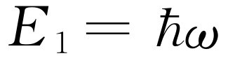
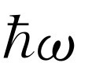

第40章 统计力学原理
§40-1 大气的指数变化律
我们已经讨论了大量相互碰撞的原子的某些性质。这个课题称为分子动理论，它是从原子碰撞的观点出发来描写物质的。从原则上来说，我们认为物质的总体性质都应当能借助于它的组成部分的运动来加以解释。
目前，我们只限于讨论热平衡状态，这只是所有自然现象中的一部分，我们把只能应用于热平衡状态的力学定律称为统计力学 ，在这部分中我们要学会这门学科中的某些主要定理。
其实，我们已经有了一个统计力学的定理，即在绝对温度T 时，任何运动中的每个独立运动的动能，即每个自由度的动能的平均值都是kT /2。它告诉了我们有关原子的方均速度的某些知识。我们现在的问题是要对原子的位置知道得更多一些，以便找出在热平衡情况下在不同的位置上的原子数是多少，并且还要对速度分布作稍微详细的研究。虽然我们知道了方均速度，我们还不知道怎么回答比方均根速率快三倍的分子数有多少，或者速率为方均根速率的四分之一的分子有多少之类的问题，或者它们全体的速率都完全相同吗？
所以，我们试图回答的两个问题是：当力作用在分子上时，分子在空间位置上是怎么分布的？它们的速度分布如何？
结果表明，这两个问题是完全独立的。速度的分布总是一样的。当我们发现，不管有无力作用于分子上，每个自由度的平均动能相同，都为kT /2时，对速度分布的问题就得到了一个提示。分子的速度分布与力无关，因为碰撞率不依赖于力。
我们以既没有风又没有其他扰动时，像我们所处的那种大气层中分子的分布作为一个例子来开始讨论。假设有一伸展得很高的气柱处在热平衡状态——这就不像我们的大气层，因为我们知道，实际的大气层越向上越冷。这里必须强调指出如果在不同高度上温度各不相同，那么我们可以用一根棒将底部小球与顶部小球连接起来的方法（图40-1）说明气体没有达到热平衡。这些小球从底部的分子中获得kT /2的动能，然后通过棒使顶部的小球振动再使顶部的分子振动。当然，这样，最后在重力场中的所有高度上，温度变得相同。
如果在所有高度上温度都相同，现在的问题是要找出当高度加大时，大气是按什么规律变得稀薄的。设N 为在压强P 下，体积V 中的气体分子总数，则有PV =NkT ，或P =nkT ，这里n =N /V 是每单位体积中的分子数目。换句话说，如果我们知道每单位体积中的分子数目，就知道了压强，反之亦然。因为在这种情况中，温度不变，它们彼此成正比关系。但是压强并不是常数，它必定随着高度的减小而增加，因为可以这么说，它必须维持在这个高度以上的所有气体的重量。这是一条我们可以用来确定压强随高度如何变化的线索。如果在高度h 上取单位面积，那么由下往上垂直作用在这个单位面积上的力就是压强P 。在无重力时，在高度h +dh 上向下作用在单位面积上的竖向力应当也是P ，但现在却不是，因为有重力，所以从下往上的力必须超过从上往下的力，超过的部分等于在h 到h +dh 之间那部分气体的重量。现在，由于作用在每个分子上的重力是mg ，其中g 是重力加速度，而在单位截面上的分子总数是n dh ，于是我们就得到以下微分方程
P h +dh -Ph =dP =-mgn dh .
因为P =nkT ，T 是常数，我们可以或者消去P 或者消去n ，比如消去P ，得微分方程
它告诉了我们高度增大时，分子密度将如何下降。
这样，我们就得到了一个分子密度n 随高度变化的方程，这里，密度的微商正比于它本身。某个函数的微商正比于它本身时，它就是一个指数函数，所以这个微分方程的解是
n =n 0 e-mgh/kT .（40.1）
这里积分常数n 0 显然是在h =0（我们可以任意选定）的地方的分子密度。分子密度随着高度的上升而指数地衰减。
注意若有质量不同的不同种类的分子，则它们将作不同的指数衰减，较重的分子随高度衰减得比较轻的分子来得快。因而可以预期，由于氧比氮重，在含有氧和氮的大气层中越往上，氮所占的比例越大。但在实际的大气层中，这种情况并没有真正发生，至少在相当的高度上没有发生，这是因为空气中有很多搅动，它使各种气体重新混合在一起。它不是一个等温的大气层。然而，对于较轻的物质，比如氢气，确实有 一种在大气层极高的地方占统治地位的趋势，因为当其他的物质都指数地衰减完时，质量最小的却依然存在（图40-2）。
§40-2 玻尔兹曼定律
这里我们注意到一个有趣的事实，在式（40.1）中指数的分子是原子的势能 。因此我们也可以将这条特殊定律表述为：在任何一点的密度正比于
exp［-（每个原子的势能）/kT ］.
这或许是偶然的，也就是说，可能只对均匀重力场的特殊情况才成立。然而，我们可以证明，这个命题是很普遍的。假定作用在气体分子上的力不是重力，而是其他某种力。比方说，分子可以带电，它们可能受到电场的作用或别的电荷的吸引，由于原子彼此间的相互吸引，或者分子与器壁、固体或某个东西的相互作用，存在某种随位置而变化的吸引力，它作用在所有分子上。为了简单起见，现在我们假定分子全都相同，在每一单个分子上都有力的作用，因而作用在一小部分气体上的总的力就是分子数乘以作用在每个分子上的力。同时为了避免不必要的麻烦，假设我们所选择的坐标系的x 轴沿力 F 的方向。
和先前一样，如果我们在气体中取两个相隔为dx 的平行平面，那么，作用在每个原子上的力乘以每立方厘米的原子数n （前面的nmg 项的推广），再乘以dx ，必须与压强的改变量相平衡
Fn dx =dP =kT dn .
或者，也可以将这个规律写成我们以后要用的形式
现在，注意到-F dx 是使分子从x 跑到x +dx 我们所要做的功，如果F 由势而来，也就是说，如果所做的功完全可以用势能来表示的话，那么这也就等于势能（P.E.）之差。势能微分的负值就是所做的功F dx ，因而得出
积分后，
n =（常数）e-P.E./ kT .（40.3）
因此我们在特殊情况下得到的结果在一般情况下也是正确的［假如力不能由势函数得出的话又会怎样？那时式（40.2）根本没有解。当原子沿一条闭合路径走一圈后，做功不为0，能量可以产生或消失，因而根本不能保持平衡。如果作用在原子上的外力不是保守力，不存在热平衡］。式（40.3）就是玻尔兹曼定律 ，它是统计力学的另一条原理：在一种给定的空间排列下找到分子的概率按这种排列的势能的负值除以kT 作指数的变化。
这就给出了粒子分布：假定在液体中有一个正离子，它将负离子吸引在周围，那么在不同的距离上吸引的负离子有多少呢？如果势能作为位置的函数是已知的，那么在不同距离上粒子的分布比例就可由上面的定律给出。对于这类问题，玻尔兹曼定律有许多应用。
§40-3 液体的蒸发
在更深入一步的统计力学中，人们试图解决下面这样一个重要问题。考虑一个彼此吸引的分子的集合，假定任何两个分子，比如i 和j 之间的作用力只依赖于它们的距离r ij ，并且可以用一个势函数V （r ij ）的微商来表示。图40-3表示这样一种函数可能具有的一种形式。对r ＞r 0 ，当分子靠近时能量减少，因为它们互相吸引，以后，当它们再靠近时，能量则迅速增加，因为它们强烈地相互推斥。大致地说，这表征了分子的行为。
现在假设有一个容器充满了这样的分子，我们希望知道，平均说来分子之间的位置将如何安排。答案是e-P.E./（ kT） 。在这种情况下，假定分子间都是两体力，总势能就是对所有的分子对求和（在更复杂的情况下，可能存在三体力，但是，比如说在电学中，势能全部是成对出现的），于是，在r ij 的任何特定组合下找到分子的概率将正比于
现在，假如温度非常高，以致kT ≫|V （r 0 ）|，则指数值几乎处处相对地都很小，因而找到分子的概率几乎与位置无关。我们取只有两个分子的情况为例，e-P.E./（ kT） 表示在各种不同的相互距离r 的情况下找到它们的概率。很清楚，当势能为负的最大时，概率最大，而当势能趋于无限大时，概率几乎为零，这只在距离极小时才出现。这意味着，对于这样的气体原子来说，由于它们之间的排斥力很强，因而一个原子跑到另一个原子上面的概率为零。在每单位体积 中，在点r 0 处比在其他任何点找到分子的机会更大。大多少则取决于温度。如果温度远大于分子处在r =r 0 和r =∞时的能量差，指数值几乎接近于1。在这种情况下，平均动能（约为kT ）大大地超过势能，不会由于力的作用而造成很大的差别。但是当温度下降时，在“优越”的距离r 0 上找到分子的概率相对于在其他任何距离找到分子的概率逐渐增加，事实上，如果kT 远小于|V （r 0 ）|，那么在r 0 的邻域我们就有相对较大的正指数。换句话说，在一给定的体积中，较之彼此相距更远的距离来说，分子更加喜欢 处在能量较少的距离上。当温度下降时，原子挤在一起，集结成群，凝缩成液体、固体和分子，当对它们加热时，它们又会蒸发掉。
为了精确地确定蒸发的状况，以及在给定条件下发生的情况，需要做下面两件事。第一，必须找出正确的分子作用力定律V （r ），它必须由其他办法，比如由量子力学或者实验得到。而给定了分子作用力定律后，只要研究函数exp［-∑（V ij ）/ kT ］，就能找出数十亿分子的运动情况。使我们感到十分意外的是，尽管函数如此简单，概念如此清晰，给定了势以后，整个工作仍是无比复杂 的，困难就在于变数的数目极其巨大。
尽管存在这样的困难，这个课题却是十分振奋人心而且趣味无穷的。这是人们常常称之为“多体问题”的一个例子，它确实是一件饶有趣味的事情。在这个简单公式中，包括了所有的细节，例如，关于气体的凝固，或固体可能采取的晶格的形式等。人们一直试图从这个公式找出各种解答。但数学困难是非常巨大的，困难不在于写出定律，而在于要处理如此大量的变数。
这就是粒子在空间的分布。实际上，经典统计力学就到此为止，因为如果知道了力，那么在原则上我们就能求出在空间的分布，而速度分布是某种我们可以一次了结地找出的东西，而不是对于不同的情况而有所不同的东西。根本的问题在于从我们的形式解中找出特殊的信息，这就是经典统计力学的主要课题。
§40-4 分子的速率分布
下面我们继续讨论速度分布，因为有时了解以不同速率运动的分子数各有多少是有意义和有用的。为此，我们可以利用在研究大气层中的气体时已经发现的事实。取大气作为理想气体，正如我们在写出势能时已假设过的那样，而不考虑原子间的相互吸引的能量。在我们的第一个例子中所涉及的势能只有重力势能。当然，如果分子间存在作用力，可能会出现更复杂的情况。因而现在我们假设分子间没有作用力，并且暂时忽略碰撞，以后我们再回过头来说明为什么可以这样做。如图40-4所示，我们已经看到，在高度为h 处的分子比高度为零处的分子要少；按公式（40.1），它们随高度而指数地下降。为什么在较高的地方分子数较少呢？难道不是所有在高度为零处向上运动的分子都能抵达高度h 吗？不！因为在零处有一些往上运动的分子运动得太慢，它们不能爬过势垒到达h 。由此，我们可以算出以不同速率运动的分子各有多少，因为从式（40.1）我们可以知道有多少分子 缺乏足够的速率爬到高度h 处。正是由于考虑了这一事实，因而在h 处的分子密度比在零处的分子密度小。
现在，我们来更严格地表达这种想法。首先，我们来计算一下由下向上穿过h =0的平面的分子数（把它的高度叫作零并不意味着在那个地方有这么一层隔板，这只是一个方便的编号，在负h 处也有气体），这些气体分子沿着每一个方向运动，但其中有一些穿过平面，在任何时刻，它们中每秒钟总有一定数量的分子带着不同的速度自下而上地穿过该平面。现在我们注意到：令u 为它们刚好能到达高度h 处所需要的速度（动能mu 2 /2=mgh ），则每秒钟通过下面的平面向上运动，且速度在垂直方向上的分量大于u 的分子数正好等于经过上面的平面、带有任何 向上运动的速度的分子数。那些垂直速度不超过u 的分子不可能到达上面的平面，所以，我们看到
穿过h =0，且v z ＞u 的分子数=穿过h =h ，且v z ＞0的分子数．
但是，以任何大于零的速度穿过h 的分子数小于以任何大于零的速度经过更低高度的分子数，因为零高度上的分子数更大；这就是我们所需要的一切。经过我们以前作过的在大气中所有各处温度相等的论证以后，我们已经知道速度分布是相同的。由于速度分布相同，这正表明在越低的位置上有越多的分子，因而容易看到以正的速度穿过高度为h 的分子数n ＞0 （h ）与以正的速度穿过高度为0的分子数n ＞0 （0）的比值就是两种高度处密度的比值，即e-mgh / kT 。但n ＞0 （h ）=n ＞ u （0），且 ，因此我们求得
用文字来表达就是，速度的z 分量大于u 的分子每秒穿过高度为零处的单位面积的分子数，等于以大于零的速度穿过同一平面的分子总数乘上 。
这不仅对于任意选定的零高度成立，对于其他任何高度当然也成立，可见速度的分布全都 相同（最后的说法不包括高度h ，它只是在论证中间出现）！这个结果为我们提供了速度分布的一般规律。它告诉我们，如果在一个汽笛上钻一个非常小的小孔，使得碰撞很少而且两次碰撞间相距很远，即比孔的直径大很多，那么各种分子跑出时将具有不同的速度，但速度大于u 的分子所占的比例则是 。
现在我们回过来讨论忽略分子碰撞的问题：为什么碰撞没有造成任何差别呢？我们可以采取同样的论证，不过不是对有限的高度h ，而是对无穷小的高度h ；这里h 取得如此小，以致在零与h 之间没有碰撞的余地。但这是不必要的；因为我们的论证明显地建立在对能量的分析和能量守恒上，而在碰撞时发生的无非是分子之间的能量交换。然而，如果能量只是和其他的分子进行交换，那么实际上我们毋需注意所考虑的是否为同一个分子。因此，即使对问题作更详细的分析（当然，要做得很严格的话，这是很困难的），结果仍没有什么不同。
有趣的是我们所发现的速度分布只是
n ＞ u ∝exp［-（K.E.）/kT ］.（40.4）
这种通过给出以某一最小的速度z 分量穿过某一给定面积的分子数的方式来描写速度分布的方法并不是给出速度分布的最方便的方法。例如，人们通常更想知道气体内在两个确定值之间以速度z 分量运动的分子数有多少。当然，这不能直接由式（40.4）得出。我们想以更方便的形式表达前面的结果，虽然我们已经把式（40.4）写得很具一般性。注意 ：不能说任何分子精确地具有某种确定的速度 ；没有一个分子的速度正好是每秒1.796 289 917 3 m。因而为了使表述具有意义，我们只能问在某个速度间隔 中可以找到的分子数目是多少。我们只能说速度介于1.796和1.797之间的分子有多少，等等。用数学术语来说，就是用f （u ）du 表示速度在u 与u +du 之间的分子占分子总数的百分比，也就是说（如果du 是无穷小量的话）f （u ）du 代表所有那些速度为u ，间隔为du 的分子所占总数的比例。图40-5表示函数f （u ）的一种可能形式，宽为du ，平均高度为f （u ）的阴影部分代表了这个百分比f （u ）du 。也就是说，阴影面积与曲线下的总面积之比就是速度为u ，而间隔为du 的分子数相对于总分子数所占的比例。如果我们这样来定义f （u ），使得速度在这个间隔中的分子所占的比例直接由阴影面积给出的话，那么总面积必然是百分之百，即
现在只要把它和我们以前推得的结果进行比较，就能求出这个分布。首先我们问，怎样利用f （u ）来表示每秒钟内以大于u 的速度通过某一面积的分子数？开始时我们或许以为这只是积分 ，但这是错的，因为我们要求的是每秒钟 通过这一面积的分子数。可以这么说，快的分子比慢的分子通过的数目多，为了表示有多少分子经过，还必须乘以速度（在前一章中当我们谈到碰撞数时，曾讨论过这个问题）。在给定的时间t 内，经过表面的分子总数是所有那些能够到达这个表面的分子数，也就说是来自与表面的距离为ut 的分子数。所以能够到达的分子数并不单单是在那里的分子数，而是每单位体积的分子数乘上为了通过这块面积它们所走过的距离，而这段距离正比于u 。于是我们要求的是u 乘以 f （u ）du 的积分，这是一个下限为u 的无穷积分，积分结果必须和我们以前得到的结果相同，即与 成正比，比例常数将在后面求出
现在，若把这个积分对u 求微商，我们就得到积分号内的东西，即得到被积函数（因为u 是下限，所以要加上一个负号），而对另一边求微商，则得到u 乘同一指数的函数（以及某个常数）。消去u 后，有
我们在两边都保留du 是为了记住这是一个分布 ，它告诉我们在速度u 与u +du 之间的分子所占的比例。
按式（40.5），常数C 必须由积分值为1这个条件确定。现在我们可以证明
[1] ．
由此很容易求得 。
因为速度与动量成正比，我们可以说动量的分布与每单位动量间隔的exp［-（K.E.）/kT ］成正比。结果发现，若用动量来表达的话，这个定理在相对论中也成立。而用速度来表述则不行。所以，最好是学习它的动量形式而不是速度形式
f （p ）dp =C e-K.E./ kT dp .（40.8）
这样，我们发现在不同的能量（动能和势能）的条件下，它们的概率都可用exp［-（能量）/kT ］来表示，这是一个很容易记住的、十分出色的定律。
当然，到现在为止我们还只给出了“垂直”方向的速度分布。我们也可以问，分子沿另一个方向运动的概率有多大？当然，这些分布是有联系的，可以从我们已经有的一个分布求出总的分布，因为总的分布只依赖于速度的大小的平方，而与z
分量无关。它必然是和方向无关的，这里只包含一个函数，即速度大小不同的概率。有了z
分量的分布，可以求得其他分量的分布。结果概率仍和e-K.E./
kT
成正比，但现在动能包括三部分： ，
和
，在指数上相加，或者可将它写成乘积
，
和
，在指数上相加，或者可将它写成乘积
可以看出这个公式必然是正确的，因为，首先它只是一个v 2 的函数，这正符合我们的要求，其次，通过对所有的v x 与v y 积分后得出的不同v z 值的概率正好就是式（40.7）。式（40.9）这一函数可以同时满足这两个要求！
§40-5 气体比热
现在我们要找一些办法来检验上面的理论，看看气体的经典理论怎样获得成功。以前我们看到，若U 是N 个分子的内能，则PV =NkT =（γ -1）U 对某些气体有时可能成立。如果是单原子气体，我们知道这也等于原子质心运动动能的2/3。对于单原子气体，动能等于内能，因此γ -1=2/3，但是如果这是一个很复杂的分子，它能够转动和振动，并且我们假定内部运动的能量也正比于kT （对经典力学而言，这是正确的）。于是在一定的温度下，除了动能kT 外，还具有内部振动能或转动能。这样，总的U 不仅包括内部的动能，而且也包括转动能，因而就得到不同的γ 值。从技术上说，测量γ 值的最好方法是测出比热，比热表征能量随温度的变化。后面我们还要再来讨论这个问题。目前，我们假设γ 是从实验上由绝热压缩的PV γ 曲线得出的。
我们来计算某些情况下的γ 值。首先，对单原子气体，U 是总能量，正好就是动能，我们已知γ 应当是5/3。对双原子气体，作为一个例子，我们可以取氧、碘化氢、氢，等等，并且假定双原子气体可以由某种类似于图40-3的力束缚在一起的两个原子来表示。还可以假定（结果表明这是完全正确的），在我们感兴趣的温度下，双原子气体中的一对原子倾向于使它们之间的距离保持为势能取极小值时的距离r 0 。如情况并非如此，如果概率不是变化很大，不是使绝大多数原子处在势能曲线的底部，我们一定会想起氧气是由O2 与单个氧原子以不寻常的比例混合而成的。但事实上，我们知道，单个氧原子是十分罕见的，这意味着，正如我们所见到的那样，势能的最小值在数值上远大于kT 。由于它们主要集中在距离r 0 附近，我们唯一要考虑的只是接近曲线极小值的那一部分，它近似地可看作是抛物线，而抛物线型的势意味着有一个谐振子，事实上，在极好的近似下，氧分子可以比喻为用以弹簧连接在一起的两个原子来表示。
那么，在温度T 下，这个分子的总能量是多少呢？我们知道，对这两个原子中的每一个原子来说，动能都应是3kT /2。所以两者合在一起的动能是3kT /2+3kT /2。我们也可用不同方式得出这个结果：同样的3/2加3/2也可看作为质心的动能（3/2），转动动能（2/2），以及振动动能（1/2）。我们知道振动动能是（1/2），因为这里只包含一维的振动，而每个自由度的能量是kT /2。至于转动，它可以绕两根轴中的任何一根旋转，所以有两个独立的运动。我们假设原子是某种质点，不能绕它们的连线转动；这一点必须记住，因为如果与事实不符时，问题可能正出在这里。但是，另外还有一件事，那就是振动的势 能；它有多大？一个谐振子的平均动能与平均势能是相等的，因此振动的势能也是kT /2。于是全部总能量是U =7kT /2。或者说kT 是每个原子的2U /7。因而这就意味着γ =9/7≈1.286，而不是5/3。
我们可以把这些数值与表40-1中所列的测量值比较一下。先看氦，它是单原子气体，我们发现γ 很接近5/3，误差可能还是实验带来的，虽然在这样低的温度下，原子之间可能有某些力。氪和氩都是单原子的气体，在实验的准确度范围之内，理论值也和它相符合。
表40-1 各种气体的比热商γ 的值
我们转向双原子气体，发现氢的γ 值为1.404，与理论值1.286不符合。与此非常类似，氧的实验值为1.399，但也与理论值不符合。碘化氢也有类似的值1.40。乍一看来，正确的答案好像是1.40。但也并非如此，因为再看下去，对于溴来说，出现的值是1.32，而对于碘，我们看到的是1.30。因为1.30与1.286相接近，因而可以说碘还是符合得比较好的，但氧就差远了。这样就使我们处于进退两难的境地；对某种分子它是对的，而对另一种分子它又不对，为了使两者都得到解释，我们必须十分巧妙地进行构思。
我们进一步看看更复杂的多原子分子，如乙烷（C2 H6 ）共有8个不同的原子，它们都以不同的组合在振动和转动，所以总的内能必定为kT 的许多倍，至少单是动能就有12kT ，因而γ -1必定十分接近于零，或者说γ 十分接近于1。事实上，它比较小，但1.22并不太小，它比只从动能算出的13/12要大，这也是不可理解的！
再进一步考虑的话，整个事情更显得神秘莫测，因为双原子分子终究不是刚性的，即使我们使原子间的耦合无比坚固，它不能强烈地振动，但仍然不停地振动。内部的振动能仍然是kT ，因为它并不依赖于耦合强度。但是，如果我们能够设想存在着绝对 刚性的分子，停止一切振动，以消除振动自由度的话，那么对双原子分子将得到U =5kT /2，γ =1.40。这看来对H2 或O2 是很符合的。然而，这里还是存在着问题的，因为无论对氢或氧，γ 值都随温度而变化！从图40-6的测量值中，我们看到对H2 来说，γ 从-185℃的1.6变化到在2000℃的1.3。氢的这种变化比氧来得显著，然而，即使对于氧来说，当温度下降时，γ 也趋向于上升。
§40-6 经典物理的失败
总而言之，可以这么说，我们碰到了一些困难。我们可以试用除弹力以外的其他力，但结果是，任何其他的力只能使γ 变大。如果再包括更多形式的能量，γ 就更趋近于1，而与事实不符。人们能够想到的经典理论只是使事情变得更糟。事实上，在每个原子中都有电子，由它们的谱线可知，存在着内部运动；每个电子至少应有kT /2的动能，以及某些势能；把这些都加进来后，γ 会变得更小。这是荒谬的，也是错误的。
1859年，麦克斯韦提出了有关气体动力学理论的第一篇出色的论文。在我们已经讨论过的那些观念的基础上，他能够精确地解释大量的已知关系，比如波义耳定律，扩散理论，气体的黏滞性，以及在下一章中要讲到的一些事情，在总结中，他列举了所有这些伟大的成就之后，写道：“最后，在建立了所有的非球形粒子的平动与转动之间的必然联系以后（他指的是kT /2定理），我们证明了这样一个粒子的系统不可能满足两种比热之间众所周知的关系”。这里他谈的就是γ （以后我们将看到γ 与测量比热的两种方式有关），他说：“我们知道，我们无法得出正确的答案。”
十年以后，在一次演讲中他说：“现在我要在诸位面前提出在我看来是分子理论上所碰到的一个最大的困难。”这些话是物理学家第一次发现经典物理定律是错误的。它第一次指明由于严格证明了的定理与实验不符，存在着一些根本不可能解释的东西。大约在1890年，金斯又谈到这个疑难。人们常听说十九世纪下半叶的物理学家认为他们已经知道了所有的重要的物理定律，剩下所要做的只是计算更多的小数点位置罢了。有人这么说了一次，其他人则随声附和。但是，充分阅读那个时代的文献就可看出，那时的物理学家都在牵挂着一些事情。金斯讲到这个疑难时说，这是极其神秘莫测的现象；看来好像是，随着温度的下降，某些运动被“冻结”了。
如果我们假设，比方说，在低温下不存在振动，而在高温下存在振动，那么我们就可以设想或许存在这样一种气体，在足够低的温度下不出现振动，因而γ =1.40，而在较高的温度下开始出现振动，因而γ 下降。对转动来说也可以作同样的论证。如果我们能够消除转动，比如说在足够低的温度下它被“冻结”了，那么我们就可以理解随着温度的下降，氢的γ 值接近于1.66这一事实。怎么来理解这种现象呢？当然，这些运动的“冻结”用经典力学是无法理解的，只有在量子力学问世后，才能得到解释。
在这里我们不加证明地叙述量子力学理论用到统计力学后的一些结果。我们还记得，按照量子力学，一个被势，例如振动势束缚的系统具有一组分立的能级，即不同能量的状态。现在的问题是：根据量子力学理论如何来修正统计力学？答案非常有趣；虽然大多数问题在量子力学中处理比经典力学更为困难，但统计力学问题在量子论中却更容易！在经典力学中得到的简单结果n =n 0 exp［-（能量）/kT ］，在量子论中变为下面一个极为重要的定理：若表示一系列分子状态的能级分别为E 0 ，E 1 ，E 2 ，…，E i ，…，则在热平衡下，在某个具有能量为E i 的特定状态中找到一个分子的概率正比于 。这给出了分子存在于不同态的概率。换句话说，在态E 1 中的概率，即相对机会，与在态E 0 下的概率之比是
因为P 1 =n 1 /N ，而P 0 =n 0 /N ，故上式当然也可写为
可见分子处在较高能态的机会比处在较低能态的机会小。高能态的原子数与低能态的原子数之比是e的指数幂（能量差的负值除以kT ）。这是一个十分简单的命题。
对谐振子来说，能级是等间隔的。如果称最低的能级E
0
=0（实际上它并不是零，这里有一点点差别，但把所有能量都移动一个常数没有任何影响），于是第一能级是
，第二能级是
，第三能级是 ，依次类推。
，依次类推。
现在我们来看看会出现什么情况。假定我们研究的只是双原子分子的振动，它可以近似地看成是一个谐振子。我们问：在E 1 态而不是在E 0 态找到一个分子的相对机会是多少？答案是，在E 1 态找到它的机会比在E 0 态找到它的机会小 倍。现在假定kT 远小于 ，即气体处在低温条件下。那么，原子出现在E 1 态的概率是极小的。实际上所有原子都处在E 0 态。如果我们改变温度，但还是让kT 保持很小，那么它在 态找到分子的机会仍然是无穷小的——振子的能量仍接近于零；只要温度远小于 ，它将不会随温度而改变。所有的振子都处在基态，它们的运动实际上都“冻结”了；这时，振动运动对比热没有贡献 。于是，由表40-1，我们可以判断，在100℃，即绝对温度373°时，相应的kT 值远小于氧或氢分子的振动能量，但对碘分子情况就不是这样。之所以有这种差别，原因在于碘原子比氢原子重得多，虽然碘中原子间的力与氢中原子间的力可相比拟，但碘分子是这样重，以致使得它的固有振动频率比氢的低得多。对氢来说，在室温下 大于kT ，但对碘来说， 小于kT ，因此只有对后者，即碘，才显示出经典的振动能。当从一个很低的T （此时分子几乎都处在它们的最低能态中），开始增加气体的温度时，它们逐渐以相当的概率出现在第二个状态，然后再出现在下一个状态，等等。当在许多态中分子的概率相当大时，气体的行为就接近于经典物理所描写的情况，因为此时量子化的状态几乎变得和能量的连续性无法区分，并且整个系统差不多可以具有任何数值的能量。于是，在温度升高时，我们再次得到经典物理的结果，正如图40-6所示。同样可以说明分子转动的状态也是量子化的，但是这些状态靠得很近，以致在通常情况下kT 远大于转动能级的间隔，这时，许多能态被激发，而系统中的转动能以经典方式起作用。在室温下情况不完全如此的一个例子是氢。
这是我们第一次通过和实验的比较确实推断出经典物理上存在着某些错误，并且我们以最初所使用的同样方式从量子力学中寻找解决困难的办法。过了三四十年，人们又发现了另一个困难，这又和统计力学有关，但这一次是光子气体的统计力学问题。普朗克在20世纪初期解决了这个问题。